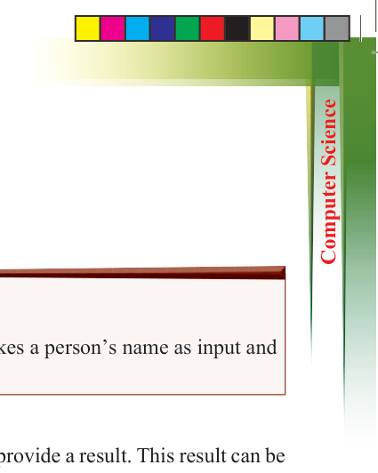
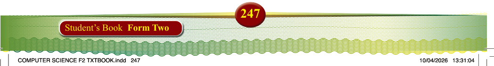
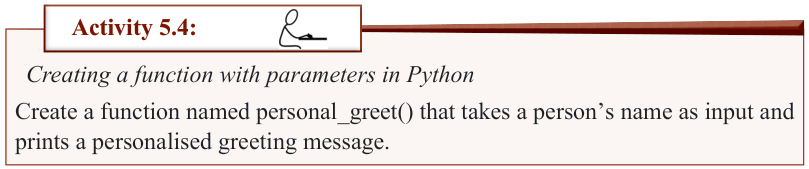
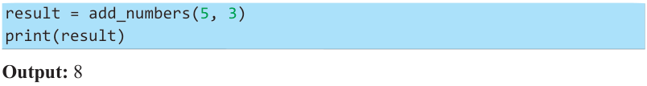
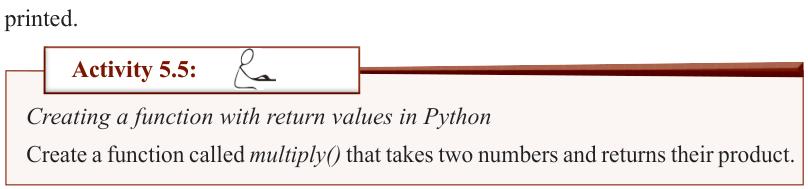
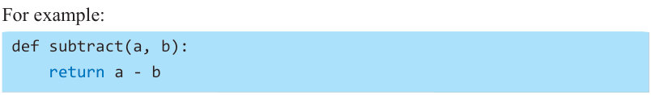

You can call this function like this:
greet("Mwanamalundi")
Output: Hello, Mwanamalundi!

Activity 5.4:
Creating a function with parameters in Python
Create a function named personal_greet() that takes a person’s name as input and prints a personalised greeting message.
Functions with return values
Sometimes, functions carry out specific tasks and provide a result. This result can be saved in a variable or used in further calculations.
For example, consider a function that adds two numbers:
def add_numbers(a, b): return a + b
From this code, a and b are parameters. The function returns the sum of a and b. To use this function, you can run the code as follows:

result = add_numbers(5, 3) print(result)
Output: 8
Referring to this example, the function returns the sum of the numbers, which is then printed.

Activity 5.5:
Creating a function with return values in Python
Create a function called multiply() that takes two numbers and returns their product.
Functions with multiple parameters
A function can have more than one parameter. Take an example of a function that takes two numbers and finds the difference between them.
For example:

def subtract(a, b): return a - b